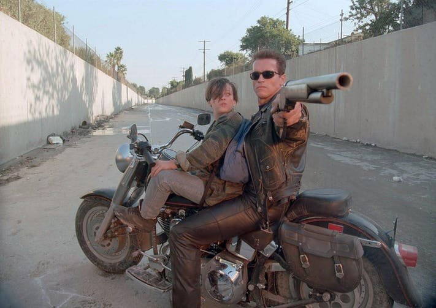
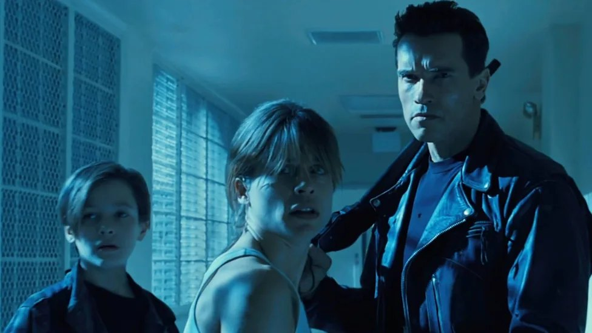
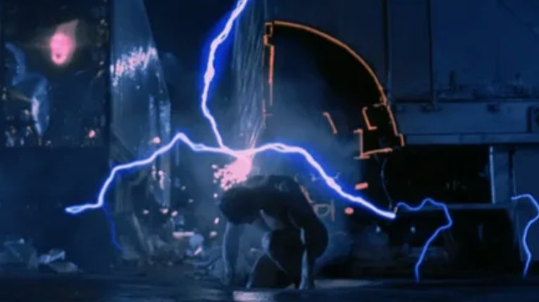
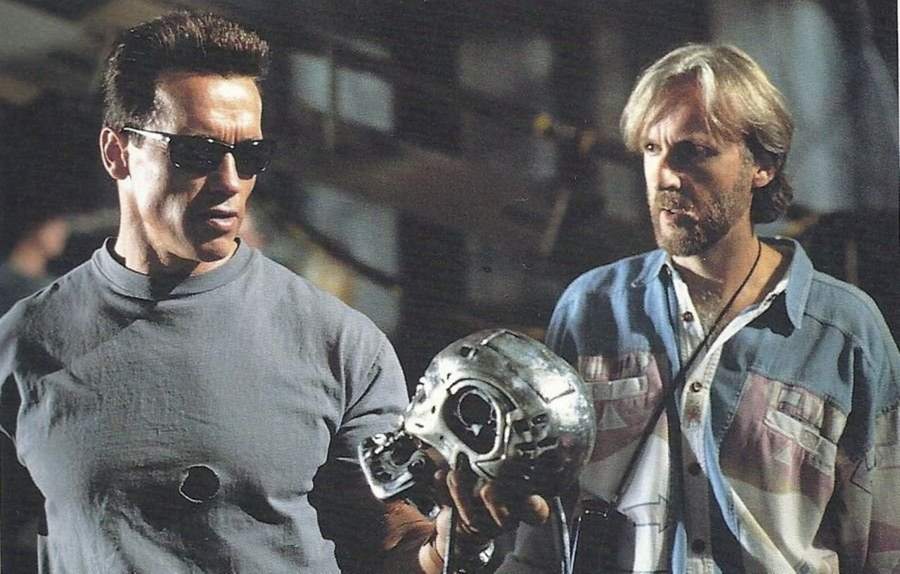
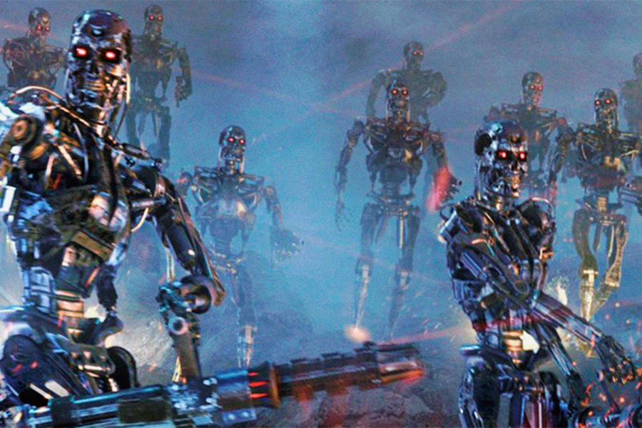
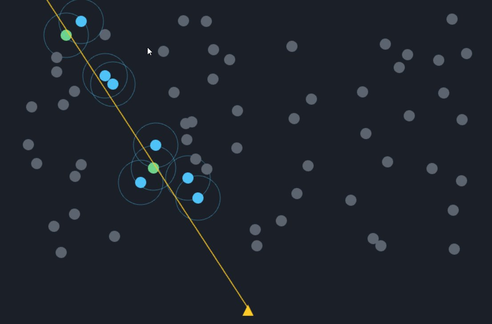
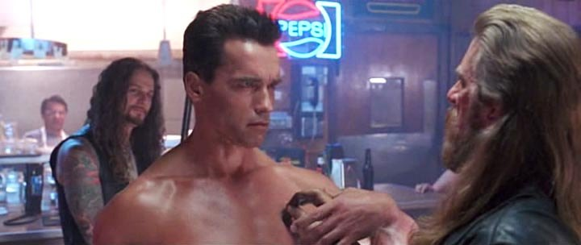
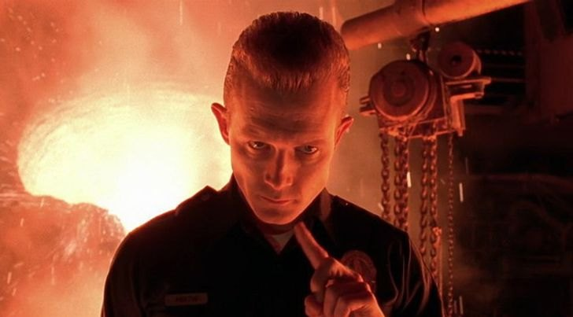
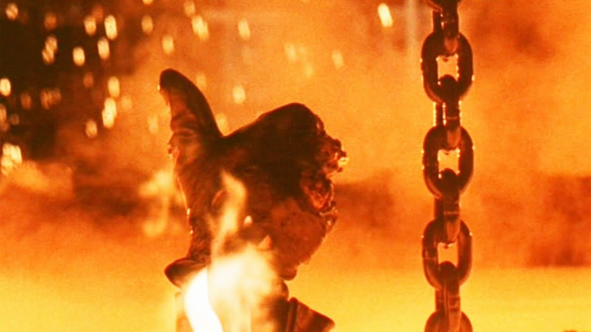

В прошлой статье мы уже немного врали игроку самым наглым образом, когда брали вполне корректную с точки зрения физики проверку земли, растягивали её на несколько миллисекунд и разрешали персонажу прыгнуть уже после того, как он фактически покинул платформу. Всё это делали не из‑за криворукости нашего программиста физики, который не умеет написать нормальную проверку столкновений, а чтобы игрок вообще не знал, что там у нас происходит со столкновениями… да он и не обязан об этом знать.
В сетевой игрe происходит примерно то же самое, но приходится немножечко врать уже не о положении персонажа, а о времени и если coyote time был маленькой ложью о том, где заканчивается платформа, то lag compensation, будет маленькой ложью о том, когда именно существовал игровой мир.
Здесь тоже все интересно и сервер действительно может быть прав что игрок не попал, а игрок всё равно будет уверен, что игра украла у него попадание, не будем разочаровывать игроков и терять прибыль из‑за плохих отзывов.
Попадания, которых не было
Представьте плейтест сетевого шутера на несколько игроков, где один из них сидит где‑нибудь во Франкфурте и имеет пинг 78 миллисекунд, что вообще‑то довольно неплохой пинг и позволяет нормально играть, но во время теста он дважды делает хедшоты и видит это на своём экране, а игра дважды говорит ему, что попадания не было.
Когда начинаешь разбирать проблему на сервере, логи действительно показывают что хедшота не было. Игрок подумал (проблема тут), потом нажал кнопку мыши, потом пакет о выстреле отправился через сеть, противник за это время продолжил двигаться, пакет наконец пришёл на сервер, сервер посмотрел на текущее состояние мира и обнаружил, что голова противника уже находится примерно на 0.4 метра левее того места, куда стрелял игрок.
С точки зрения сервера никакой проблемы нет, и raycast не пересёк hitbox, поэтому попадания нет. Закрываем баг и пишем в тикете что‑нибудь вроде «works as designed», только вот игрок почему‑то с этим не согласен. И это довольно хороший момент, чтобы вспомнить предыдущую статью, потому что там у нас была такая же проблема, когда компьютер видел одно состояние, а человек видел другое, теперь между этими состояниями появилась ещё и сеть.
В локальной игре у нас хотя бы существует единый мир, а в сетевой игре мир начинает существовать сразу в нескольких временных версиях, и каждая из этих версий для своей части системы является истинно настоящей.
Для игрока настоящий тот мир, который находится у него на экране, а для сервера настоящий тот мир, который существует на текущем серверном тике. Между ними находится сеть, которая берёт две одинаковые вещи и на некоторое время убеждает нас, что они разные.
В результате для игроков с задержкой больше 40 миллисекунд около 12% выстрелов в тестовом прототипе вообще не пересекает hitbox на сервере, тогда как в локальной игре таких случаев будет меньше 2%, и фраза «у тебя просто большой ping» становится уже вашей проблемой, а не игрока.
CLIENT SERVER
target target
O O
| |
| |
| |
SHOOT! |
| |
+---------- packet ------------------->|
|
v
target moved
RAYCAST
|
X MISSГде находится противник?

На самом деле вопрос «где находится противник?» в сетевой игре достаточно сложный, и если я смотрю на него прямо сейчас, то где он находится? В точке, которую я вижу на экране или в точке, где он находится на сервере? Или в точке, где он находился несколько десятков миллисекунд назад, когда мой клиент получил соответствующий снапшот состояния мира?
Хм… и тут оказывается, что все три ответа одновременно могут быть правильными. Клиент не показывает абсолютно точно последнее состояние сервера, потому что тогда движение удалённых игроков выглядело бы очень дерганым: один снапшот пришёл, персонаж стоит здесь, следующий пришёл, персонаж сразу оказался немного дальше, между ними ничего нет. Картинка начинает дёргаться, а игрок вместо нормального движения получает бесплатную демонстрацию работы сетевого протокола, поэтому клиент интерполирует состояние мира, понемного подгоняет текущее положение объектов к серверному.
Сервер прислал позиции игрока на нескольких соседних тиках, клиент получил их с задержкой и теперь может плавно двигать персонажа между этими состояниями, причём для этого ему нужно некоторое время держать их в прошлом. И если задержка интерполяции составляет 100 миллисекунд, то позиции, которые вы видите на экране сейчас будут соответствовать миру, который сервер уже успел оставить позади.
Это нормальная работа связки клиент‑сервер, более того, это именно то поведение, которого мы хотим как разработчики, но проблема появляется в тот момент, когда игрок нажимает кнопку мыши, потому что стрелять он хочет именно в тот мир, который видит, а сервер получает ваш выстрел немного позже и проверяет его уже против другого (своего) мира. Получается странная ситуация, когда выстрел был произведён в прошлом, сервер проверяет его в настоящем, а игрок ожидает, что сервер каким‑то образом догадается, что он видел ещё более прошлое.
TIME ------------------------------------------------------------>
SERVER [100]------[101]------[102]------[103]------[104]
^
|
shot arrives
CLIENT [100]------[101]
^
|
SHOOT!
CLIENT SEES O
|
TARGET
SERVER NOW O
|
TARGETИ если сервер этого не сделает, то получится классический случай «я попал, но игра сказала, что нет». (Попробовать самому) Целиться надо в то, что видишь, и смотреть как задержка превращает «наивный» выстрел в промах.
Делаем машину времени

Самое очевидное решение здесь заставить сервер помнить прошлое, на каждом серверном тике сохраняя положение чего‑нибудь «условно постоянного», например, hitbox’ов персонажей и складывать снапшоты в массив. Тогда вместо одного текущего состояния у нас появляется небольшая история мира, по которой можно пройти назад, и если сохранять 64 тика при частоте 60 Hz, сервер получает примерно 1066 миллисекунд истории.
Теперь у сервера буквально появляется возможность спросить, «а где этот человек находился секунду назад?». Если у персонажа 18 коллижен боксов, размером в 32 байта, то один снапшот занимает 576 байт, а для 32 игроков и 64 тиков вся история занимает примерно 1MB, что для современного сервера вообще не выглядит чем‑то страшным.
Самое интересное начинается дальше, потому что хранить историю довольно просто, а вот понять, какую именно точку этой истории использовать для конкретного выстрела, уже будет сложнее. Условно у нас появляется что‑то вроде (неважен сам код, я просто показываю пример):
struct FHitboxSnapshot{
uint32 Tick;
Capsule Hitboxes[18];
};А дальше при обработке выстрела мы уже не просто делаем Raycast(CurrentWorld), а сначала пытаемся понять, в какой момент прошлого должен существовать наш CurrentWorld. То есть задача превращается из: попал ли луч в hitbox? в Попал ли луч в hitbox в том состоянии мира, которое видел стрелок?. И получается примерно следующее:
NOW
|
v
SERVER -----------------+----------------------------->
|
target
O
/ / / X MISS
<---- REWIND ----
SERVER -----------------+----------------------------->
|
old target
O
/ / / / / HITИ простая на вид проверка по времени, превращается в совсем другую по уровню задачу. Попробовать самому (надо включать и выключать rewind‑компенсацию, чтобы сравнить hit rate).
На сколько тиков нужно вернуться?
Первое, что хочется сделать, просто взять время тика и откатить его на пинг. Например, время тика равно 100 миллисекунд, а пинг 78мс, значит давайте перемотаем мир на один тик назад. Но пинг это время туда и обратно, а нас интересует прежде всего та часть задержки, которая потребовалась пакету с выстрелом, чтобы добраться до сервера, поэтому в конкретной реализации используется формула:
rewindTime = RTT / 2 + interpolationDelay;При пинге 78 миллисекунд и задержке интерполяции 100 миллисекунд получается:
REWIND
|
+-------------+-------------+
| |
RTT / 2 interpolation
| delay
| |
39 ms 100 ms
| |
+-------------+-------------+
|
v
139 msТо есть сервер проверяет попадание примерно в том состоянии hitbox’ов, которое существовало 139 миллисекунд назад. Причём тоже есть небольшая проблема, время нельзя просто брать из сообщения клиента, потому что иначе клиенту достаточно сообщить серверу, что он якобы интерполирует мир с задержкой в две секунды, и сервер будет услужливо перематывать всех остальных игроков куда‑то в эпоху динозавров.
Поэтому время отката сервер измеряет сам, но это уже другая история как проверить достоверность приходящих данных. Сам пинг тоже нельзя воспринимать как константу, потому что сеть меняет задержки прямо во время игры, и в такой системе можно использовать статистику последних 20 ответов и брать значение из диапазона между 25-м и 75-м перцентилем, а при большом разбросе и округлять отмотку времени, чем пытаться компенсировать каждую случайную вспышку задержки.
Потому что если пытаться компенсировать реальный пинг игрока, то очень быстро выяснится, что у есть игроки с реально плохим пингом, которые стреляют практически из прошлого с отмоткой времени на 500+мс. Представьте себе другого игрока, который забежал за угол и там сел, а потом внезапно получил хедшот, вот примерно так выглядит перекомпенсированный пинг.
Попробовать самому (подвигать RTT и interpolation delay по отдельности и смотреть, как из них складывается rewindTime).
Правдивая ложь

И вот здесь появляется очень интересный вопрос: если мы уже согласились перематывать мир назад ради игрока, то почему бы не перематывать его настолько далеко, насколько нужно? Например игроку с 500 миллисекундами пинга не дать такие же условия, что и игроку с 20?
А потому что, тогда задержка начинает превращаться из недостатка в игровое преимущество, и на сверх большом пинге начинают появляться ситуации, когда противник выбежал из‑за стены, вы увидели его, выстрелили и сразу спрятались обратно. В вашем медленном мире он ещё находится там, где вы его только что видели, а на сервере он уже давно оказался за стеной.
И если сервер доверяет прошлому состоянию, игрок с большой задержкой сможет регулярно попадать в людей, которые с серверной точки зрения уже давно скрылись за укрытием, то есть мы вроде бы исправили ощущение несправедливости для стрелка, но одновременно создали новую несправедливость для того, в кого стреляют. Поэтому максимальное окно отмотки времени на сервере приходится ограничивать.
PAST NOW
| |
v v
+-----------------------------------------------------------+
|<-------------------- history ---------------------------->|
|
|<------ 200 ms ------>|
|
+ MAX REWINDВ идеальном случае реализация не должна выходить за 200 миллисекунд… условно, для нашей игры. Откуда получилась эта цифра? А просто это компромиссное время, который вы выводите из жалоб игроков. При 250 миллисекундах жалобы на попадания по игрокам, которые уже успели уйти за укрытие, растут, а при 150 миллисекундах хедшоты начинают падать и жалуются уже другие игроки, поэтому 200 миллисекунд оказалось разумным компромиссом между двумя противоположными проблемами. У lag compensation нет правильного числа.
Попробовать самому (Надо спрятать цель за стену и поднять MAX_REWIND выше задержки стрелка, чтобы поймать нечестное попадание).
А зачем перематывать всех?

Есть и более прозаическая проблема после того, как мы научились путешествовать во времени. Если в игре 32 игрока на каждом выстреле мы должны перематывать всех 32, и сервер занимается этим при каждом выстреле. Но мы примерно знаем направление выстрела и можем сначала определить, какие объекты вообще способны пересечься с лучом, а уже потом заниматься историей, поэтому можно выбросить из проверки 90% тех кто не пересекаются и снизить время проверок.
SHOT RAY
v
+-----------------------+
| 32 players |
| O O O |
| O |
| O O |
| O |
+-----------------------+
|
spatial filter
v
O O
2.3 avg.
ALL PLAYERS FILTERED
| |
v v
0.9 ms 0.08 msТо есть здесь мы не столько ускорили саму отмотку времени, сколько сначала убедились, что нам вообще не нужно делать его для большинства объектов и вполне вероятны ситуации, что луч пули даже близко ни с кем не пересекается и можно вообще не запускать логику хита.
Попробовать самому (Надо стрелять по толпе и смотреть измеренную дельту перфа между проверкой всех игроков и только кандидатов).

А вот тут начинается тот класс проблем, который показывает, насколько всё это на самом деле связано не только с сетью. Допустим, мы решили сохранять hitbox каждый тик:
SaveHitboxSnapshot();
UpdateAnimation();Теперь у нас возникает проблема, что визуальная модель уже перешла в новую позу, а сохранённый hitbox всё ещё соответствует старой. Для обычного движения игрок этого, скорее всего, вообще не заметит, но для быстрого противника (самолет, машина, быстрый бег), разница в несколько сантиметров уже могут оказаться вполне достаточными, чтобы превратить попадание в промах.
Попробовать самому (Надо сменить порядок SaveHitboxSnapshot()/UpdateAnimation() и посмотреть, как расходятся видимая поза и сохранённый hitbox).
Сервер должен быть честным

До этого момента мы в основном пытались сделать сервер добрее к игроку, но теперь нужно немного подумать о том, что произойдёт, если игрок решит этой добротой воспользоваться. Потому что пинг позволяет клиенту сказать серверу: Я стрелял на тике 123456
и фактически попросить сервер посмотреть в прошлое, а значит, параметр времени сам становится частью логики, и ему уже нельзя просто доверять. Сервер должен самостоятельно ограничивать глубину отмотки и проверять, насколько заявленный тик вообще похож на нормальное продолжение временной шкалы конкретного соединения, например сравнивая его со скользящим средним последних 32 пакетов и отвергая запросы, которые отклоняются больше чем примерно на 60 миллисекунд. Иначе механизм компенсации из удобной игровой механики очень быстро превращается в ещё один накрутки фрагов. Поэтому подозрительные запросы лучше не только отбрасывать, но и логировать.
И это тоже довольно характерный момент для сетевых игр и как только система начинает доверять клиенту хоть немного больше необходимого, выясняется, что клиенты находят способы этим воспользоваться.
Попробовать самому (Можно соврать серверу о своей задержке и посмотреть, когда заявку примут, а когда отклонят).
А что если игрок уже умер?
Есть ещё один маленький edge case, когда игрок выстрелил, потом пакет полетел на сервер. Пока пакет летел, игрок умер, пакет пришёл после смерти. Что делать? Можно посмотреть на текущее состояние игрока и сказать «Игрок мёртв, значит выстрела не было», но тогда игрок с большим ping получает довольно странное поведение, когда его пули существуют только до момента смерти персонажа на сервере. Поэтому имеет смысл проверять не только текущее состояние, но и состояние стрелка в тот момент времени, к которому относится выстрел. И получается уже другая замечательная ситуация, в которой сервер может одновременно сказать:
Да, сейчас ты мёртв. И ты кого‑то убил
Потому что, когда ты стрелял, ты ещё был жив.

Попробовать самому (Можно стрелять за миг до смерти и смотреть, как поведут себя наивная и честная проверки alive).
Компенсацию времени вообще нельзя рассматривать отдельно от забегания в будущее (client prediction), потому что все эти системы в конечном итоге пытаются решить одну и ту же проблему с разных сторон. Клиент должен продолжать жить, пока сервер находится где‑то далеко, а потом обе версии мира должны каким‑то образом снова договориться, что именно здесь произошло, поэтому им нужна общая временная шкала.
Здесь ещё часто возникает путаница между компенсацией времени и rollback (простой отмоткой времени), потому что оба подхода используют слова «откатить», «вернуться назад» и «проверить прошлое», но под капотом это совершенно разные системы.
Rollback возвращает симуляцию в прошлое, а затем проигрывает её заново, чтобы получить новое состояние мира.
LAG COMPENSATION
PAST NOW
| |
v v
[old hitboxes] -------------------- [world]
|
+--> raycast
|
+--> restore
ROLLBACK
PAST NOW
| |
v v
[whole world] ---- replay ----------> [world]
|
+--> physics
+--> AI
+--> projectiles
+--> inputsКомпенсация времени в таком варианте работает проще и мы не откатываем всю физику, не перематываем трассы пуль, не запускаем заново AI и не пересчитываем всех 32 игроков, а временно берём старые положения нужных hitbox’ов и выполняем проверку попадания, а затем возвращаем всё обратно.
Поэтому одинаковая фраза «мы возвращаем игру в прошлое» может означать две совершенно разные архитектуры, одна из которых хранит несколько десятков килобайт истории hitbox’ов, а другая внезапно начинает повторно симулировать половину игры.
Попробовать самому (Один и тот же выстрел, но откат одного hitbox’а против переигровки всего мира, можно увидеть во что это обходится, красные точки переигровка всего мира).
Хорошая игра должна врать о времени
Если посмотреть на всё это со стороны, система компенсации лага выглядит довольно странно. Мы специально храним прошлое, специально перематываем мир назад, специально проверяем попадание не в том состоянии, которое существует сейчас на сервере, а в состоянии, которое некоторое время назад видел клиент, и делаем это всё ради того, чтобы игрок получил результат, который с его точки зрения выглядит естественным.
То есть сервер сознательно проверяет не совсем тот мир, который существует в данный момент. И это очень похоже на coyote time, и опять с точки зрения обычной физики это выглядит немного безумно, но игра вообще не обязана быть строгой физической моделью.
Поэтому coyote time и lag compensation на самом деле являются двумя вариантами одной и той же идеи (подогнать игру под особенности человеческого восприятия), хотя находятся совершенно в разных частях движка. Игрок вообще не знает, что его клиент живёт на 100 миллисекунд в прошлом, что пакет с выстрелом приехал позже, что сервер хранит 64 snapshot’а, что hitbox был перемотан на 139 миллисекунд, что один из них был отфильтрован, а потом ещё и восстановлен обратно. Он вообще не должен этого знать.
В конце концов это театр для одного зрителя. Хорошая игра должна немного врать, главное, чтобы игроку было интересно играть.

P. S. Уважаемые Клавдий и Фубля помогали делать примеры для этой статьи, потому что писать это всё на плюсах и заставлять вас компилировать на своей машине, как‑то за гранью добра. Примеры в прошлой статье тоже добавил, если кому интересно.
Клавдий и Фубля
Маленькая девочка собирается с мамой на прогулку, мама ее поторапливает:
— Собирайся быстрее, дочка.
— Сейчас, мамочка, только Фублю возьму!
— Кого???
Девочка убегает в детскую и возвращается с ужасной, замызганной, омерзительной куклой с продавленым глазом, облезлыми волосами и погрызенной ногой и в каких‑то тряпках вместо платья.
Мама, видя это чудовище, в ужасе:
— Фу! Бл*!
Девочка:
— Вот и папа её так же называет